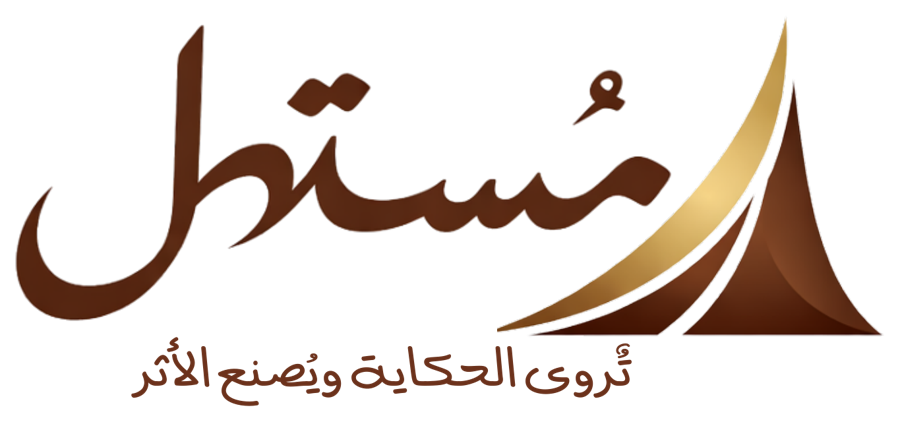
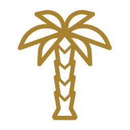

1/5
1/5من الحلم إلى الحرفة
19 يناير 2026 · مقر ورث · 40 دقيقة
مع الخريج فيصل الجارالله والطالب حماد الشمري عن برنامج البناء بالطين. أدار الحوار محمد آل عطفة.

مساحة حوارية مهنية تجمع طلاب المعهد مع القيادات والخبراء في المشهد الثقافي، انطلقت في 1 يناير 2026 بدعم وتمكين من إدارة شؤون الطلاب.
أن يكون نادي مُستهل منصة طلابية رائدة تُسهم في تمكين الجيل الثقافي القادم، وربط الطلبة بالمنظومة الثقافية الوطنية، وصناعة قيادات شابة فاعلة في مستقبل القطاع الثقافي بالمملكة.
تفعيل دور الطلبة في المشهد الثقافي من خلال لقاءات نوعية تُسهم في تبادل المعرفة، ودعم التوجّه المهني، وبناء شبكة علاقات مع الهيئات والمؤسسات الثقافية.
 1/4
1/4 جلسات النادي
جلسات الناديما نظّمه النادي بنفسه: جلسات حوارية، زيارات، ولقاءات مع خبراء.
1/5مع الخريج فيصل الجارالله والطالب حماد الشمري عن برنامج البناء بالطين. أدار الحوار محمد آل عطفة.
1/7استضفنا عمداء كليات المعهد ضمن موسم الأندية الطلابية، مع نشاط تفاعلي وهدايا رمزية.
 1/7
1/7مع أ. ابتسام الوهيبي، مدير عام إدارة التراث الثقافي غير المادي في هيئة التراث، وأ. العنود البتال من قطاع الحرف اليدوية، عن دور الهيئة في حفظ التراث وتقديمه للعالم.
 1/4
1/4جولة وحوار مع مدير المتحف جاك برسكيان عن المتحف كمكان حيّ للتبادل الثقافي.

مع د. ملك علوي، استشارية طب الأشعة التشخيصية في مستشفى السعودي الألماني.
جلسة في مكتبة الاستوديو عن تجارب الفنان بين المعارض والورش، وحوار مفتوح مع الطلاب.
مع المصممة نورة سليمان عن رحلة القطعة من الرسمة الأولى إلى التنفيذ والتسعير.

تعاونات مجتمع ورثفعاليات نظّمناها مع مجتمع ورث.
 1/3
1/3محاضرة ضمن فعاليات مجتمع ورث، تولى فيها النادي فريق التنظيم والإشراف على الحضور.
تعاون لتنظيم فعاليات المجتمع في فبراير: تسجيل، استقبال، وإشراف على الورش والحضور.
 أخبار
أخبارمحطات النادي.
انطلق النادي في يوم إطلاق الأندية الطلابية بإشراف شؤون الطلاب وبحضور قيادات المعهد، واستقطب أعضاء من مختلف الكليات والبرامج.
ختام أول موسم للنادي وتكريم الفريق.
 القادم
القادمثلاثة تفعيلات قيد التنسيق.
حوار مع الفنان والمصور حول معرضه ودور الفنان في ظل الظروف الراهنة.
جلسة مع نادي سينيراما: من الفكرة إلى الفيلم، وتطبيق على مشاريع طلابنا تمهيدًا لسدوس.
نعلن معرض عضوة النادي ونلتقيها في مقره لتنقل تجربتها من الفكرة إلى صالة العرض.
 الفريق
الفريقالهيكل التنظيمي 2026–2027: اثنا عشر عضوًا في ثلاثة فرق.
 تواصل
تواصلللضيوف والشركاء ولمن يريد الانضمام.